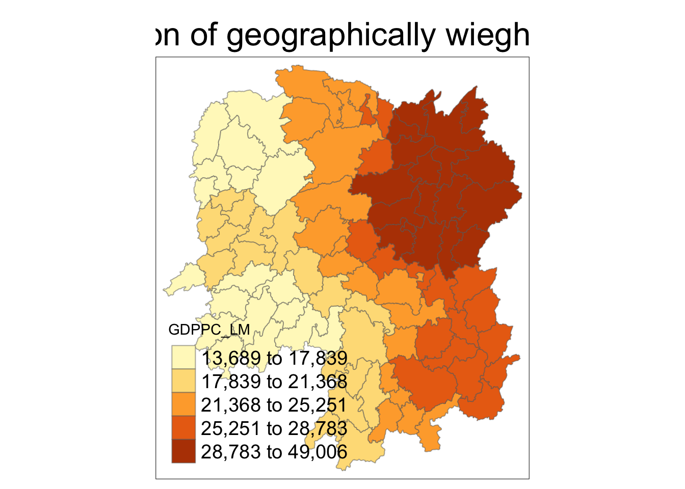
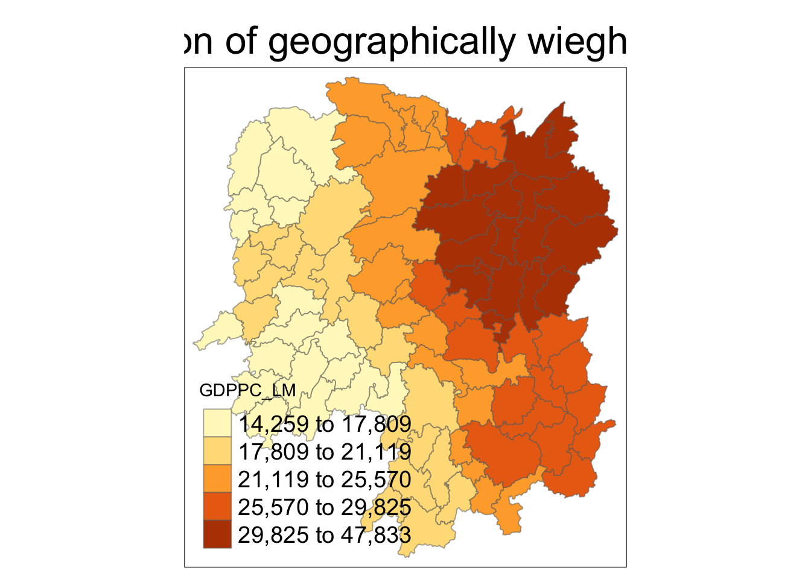
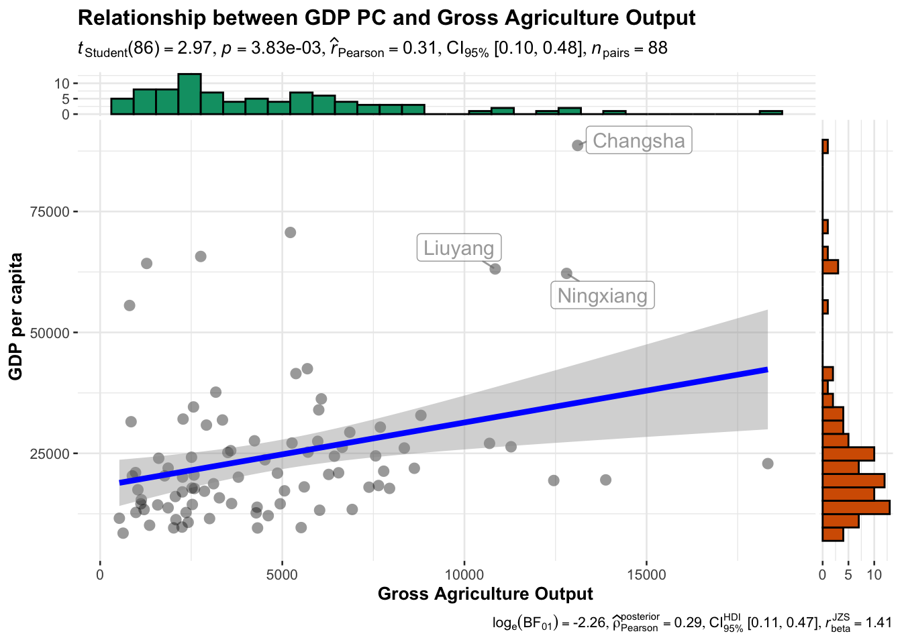

pacman::p_load(sf,ggstatsplot, tmap, tidyverse, knitr,GWmodel)In-class EX04
Geographically Weighted Summary Statistics - gwModel methods
1.Geographically weighted summary statistics with fixed
1.1Loading the package
1.2Preparing the Data
hunan_sf <- st_read(dsn = "data/geospatial",
layer = "Hunan")Reading layer `Hunan' from data source
`/Users/yangyayong/Downloads/学校文件/smu文件/Term 3/G/yyyirene/ISSS626-GAA/In-class_EX/In-class_EX04/data/geospatial'
using driver `ESRI Shapefile'
Simple feature collection with 88 features and 7 fields
Geometry type: POLYGON
Dimension: XY
Bounding box: xmin: 108.7831 ymin: 24.6342 xmax: 114.2544 ymax: 30.12812
Geodetic CRS: WGS 84hunan2012 <- read_csv("data/aspatial/Hunan_2012.csv")Rows: 88 Columns: 29
── Column specification ────────────────────────────────────────────────────────
Delimiter: ","
chr (2): County, City
dbl (27): avg_wage, deposite, FAI, Gov_Rev, Gov_Exp, GDP, GDPPC, GIO, Loan, ...
ℹ Use `spec()` to retrieve the full column specification for this data.
ℹ Specify the column types or set `show_col_types = FALSE` to quiet this message.hunan_sf <- left_join(hunan_sf,hunan2012)%>%
select(1:3,7,15,16,31,32)Joining with `by = join_by(County)`1.3Mapping GDPPC
basemap <- tm_shape(hunan_sf) +
tm_polygons() +
tm_text("NAME_3", size=0.5)
gdppc <- qtm(hunan_sf, "GDPPC")
tmap_arrange(basemap, gdppc, asp=1, ncol=2)
Converting to spatialpolygonsDataFrame
hunan_sp <- hunan_sf %>%
as_Spatial()Notice：GWmodel presently is built around the older sp and not sf formats for handling spatial data in R.
2.Geographically Weighted Summary Statistics with adaptive bandwidth
2.1Determine adaptive bandwidth
2.1.1cross-validation
bw_cv <- bw.gwr(GDPPC ~ 1,#indepedent
data= hunan_sp,
approach = "cv",
adaptive = TRUE,
kernel = "bisquare",
longlat = T)Adaptive bandwidth: 62 CV score: 15515442343
Adaptive bandwidth: 46 CV score: 14937956887
Adaptive bandwidth: 36 CV score: 14408561608
Adaptive bandwidth: 29 CV score: 14198527496
Adaptive bandwidth: 26 CV score: 13898800611
Adaptive bandwidth: 22 CV score: 13662299974
Adaptive bandwidth: 22 CV score: 13662299974 2.1.2AIC
bw_AIC <- bw.gwr(GDPPC ~ 1,#indepedent
data= hunan_sp,
approach = "AIC",
adaptive = TRUE, # great circle distance will be calculated
kernel = "bisquare", #km
longlat = T)Adaptive bandwidth (number of nearest neighbours): 62 AICc value: 1923.156
Adaptive bandwidth (number of nearest neighbours): 46 AICc value: 1920.469
Adaptive bandwidth (number of nearest neighbours): 36 AICc value: 1917.324
Adaptive bandwidth (number of nearest neighbours): 29 AICc value: 1916.661
Adaptive bandwidth (number of nearest neighbours): 26 AICc value: 1914.897
Adaptive bandwidth (number of nearest neighbours): 22 AICc value: 1914.045
Adaptive bandwidth (number of nearest neighbours): 22 AICc value: 1914.045 bw_cv[1] 22bw_AIC[1] 222.1.3Computing geographically wieghted summary statistics
Computing geographically wieghted summary statistics
gwstat <- gwss(data = hunan_sp,
vars = "GDPPC",
bw = bw_AIC,
kernel = "bisquare",
adaptive = TRUE,
longlat = T)Code chunk below is used to extract SDF data table from gwss object output from gwss(). It will be converted into data.frame by using as.data.frame().
2.2Prepare the output data
gwstat_df <- as.data.frame(gwstat$SDF)hanan_gwstat <- cbind(hunan_sf,gwstat_df)#cbind is used to append the newly derved data.frame onto hunan_sf sf data.frame
2.3Visualising geographically weighted summary statistics
tm_shape(hanan_gwstat) +
tm_fill("GDPPC_LM",
n = 5,
style = "quantile") +
tm_borders(alpha = 0.5) +
tm_layout(main.title = "Distribution of geographically wieghted mean",
main.title.position = "center",
main.title.size = 2.0,
legend.text.size = 1.2,
legend.height = 1.50,
legend.width = 1.50,
frame = TRUE)
3.Geographically Weighted Summary Statistics with fixed
3.1Determine fixed bandwidth
bw_cv <- bw.gwr(GDPPC ~ 1,#indepedent
data= hunan_sp,
approach = "cv",
adaptive = FALSE,
kernel = "bisquare",
longlat = T)Fixed bandwidth: 357.4897 CV score: 16265191728
Fixed bandwidth: 220.985 CV score: 14954930931
Fixed bandwidth: 136.6204 CV score: 14134185837
Fixed bandwidth: 84.48025 CV score: 13693362460
Fixed bandwidth: 52.25585 CV score: Inf
Fixed bandwidth: 104.396 CV score: 13891052305
Fixed bandwidth: 72.17162 CV score: 13577893677
Fixed bandwidth: 64.56447 CV score: 14681160609
Fixed bandwidth: 76.8731 CV score: 13444716890
Fixed bandwidth: 79.77877 CV score: 13503296834
Fixed bandwidth: 75.07729 CV score: 13452450771
Fixed bandwidth: 77.98296 CV score: 13457916138
Fixed bandwidth: 76.18716 CV score: 13442911302
Fixed bandwidth: 75.76323 CV score: 13444600639
Fixed bandwidth: 76.44916 CV score: 13442994078
Fixed bandwidth: 76.02523 CV score: 13443285248
Fixed bandwidth: 76.28724 CV score: 13442844774
Fixed bandwidth: 76.34909 CV score: 13442864995
Fixed bandwidth: 76.24901 CV score: 13442855596
Fixed bandwidth: 76.31086 CV score: 13442847019
Fixed bandwidth: 76.27264 CV score: 13442846793
Fixed bandwidth: 76.29626 CV score: 13442844829
Fixed bandwidth: 76.28166 CV score: 13442845238
Fixed bandwidth: 76.29068 CV score: 13442844678
Fixed bandwidth: 76.29281 CV score: 13442844691
Fixed bandwidth: 76.28937 CV score: 13442844698
Fixed bandwidth: 76.2915 CV score: 13442844676
Fixed bandwidth: 76.292 CV score: 13442844679
Fixed bandwidth: 76.29119 CV score: 13442844676
Fixed bandwidth: 76.29099 CV score: 13442844676
Fixed bandwidth: 76.29131 CV score: 13442844676
Fixed bandwidth: 76.29138 CV score: 13442844676
Fixed bandwidth: 76.29126 CV score: 13442844676
Fixed bandwidth: 76.29123 CV score: 13442844676 bw_AIC <- bw.gwr(GDPPC ~ 1,#indepedent
data= hunan_sp,
approach = "AIC",
adaptive = FALSE,
kernel = "bisquare",
longlat = T)Fixed bandwidth: 357.4897 AICc value: 1927.631
Fixed bandwidth: 220.985 AICc value: 1921.547
Fixed bandwidth: 136.6204 AICc value: 1919.993
Fixed bandwidth: 84.48025 AICc value: 1940.603
Fixed bandwidth: 168.8448 AICc value: 1919.457
Fixed bandwidth: 188.7606 AICc value: 1920.007
Fixed bandwidth: 156.5362 AICc value: 1919.41
Fixed bandwidth: 148.929 AICc value: 1919.527
Fixed bandwidth: 161.2377 AICc value: 1919.392
Fixed bandwidth: 164.1433 AICc value: 1919.403
Fixed bandwidth: 159.4419 AICc value: 1919.393
Fixed bandwidth: 162.3475 AICc value: 1919.394
Fixed bandwidth: 160.5517 AICc value: 1919.391 bw_AIC[1] 160.5517distance value in km
bw_cv[1] 76.291263.2Computing geographically wieghted summary statistics
#have six means,have six neighbours
3.2.3Computing fixed bandwidth
gwstat <- gwss(data = hunan_sp,
vars = "GDPPC",
bw = bw_AIC,
kernel = "bisquare",
adaptive = FALSE,
longlat = T)3.2.4Preparing the output data
Code chunk below is used to extract SDF data table from gwss object output from gwss(). It will be converted into data.frame by using as.data.frame().
gwstat_df <- as.data.frame(gwstat$SDF)Next, cbind() is used to append the newly derived data.frame onto hunan_sf sf data.frame.
hunan_gstat <- cbind(hunan_sf, gwstat_df)3.2.5Visualising geographically weighted summary statistics
tm_shape(hunan_gstat) +
tm_fill("GDPPC_LM",
n = 5,
style = "quantile") +
tm_borders(alpha = 0.5) +
tm_layout(main.title = "Distribution of geographically wieghted mean",
main.title.position = "center",
main.title.size = 2.0,
legend.text.size = 1.2,
legend.height = 1.50,
legend.width = 1.50,
frame = TRUE)
3.3Geographically Weighted Correlation with Adaptive Bandwidth
ggscatterstats(
data = hunan2012,
x = Agri,
y = GDPPC,
xlab = "Gross Agriculture Output", ## label for the x-axis
ylab = "GDP per capita",
label.var = County,
label.expression = Agri > 10000 & GDPPC > 50000,
point.label.args = list(alpha = 0.7, size = 4, color = "grey50"),
xfill = "#CC79A7",
yfill = "#009E73",
title = "Relationship between GDP PC and Gross Agriculture Output")Registered S3 method overwritten by 'ggside':
method from
+.gg ggplot2`stat_xsidebin()` using `bins = 30`. Pick better value with `binwidth`.
`stat_ysidebin()` using `bins = 30`. Pick better value with `binwidth`.
There is a weak positive correlation between GDP per capita and Gross Agriculture Output, with a Pearson correlation coefficient of 0.31 and statistically significant (p value is small). Although the correlation is not strong, Bayesian analysis supports its existence, with the Bayes factor indicating strong support for the alternative hypothesis (that there is a correlation). Overall, the increase in agricultural output may have a certain impact on per capita GDP, but this impact is relatively weak.